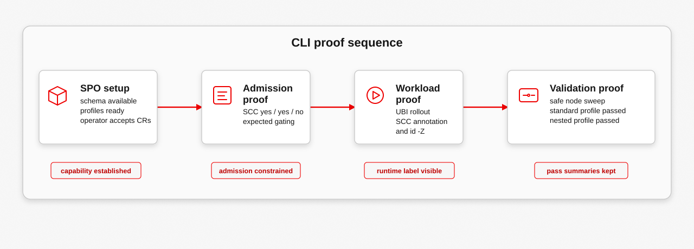

This demo proves both OpenShift workload classes: standard blastwall and nested blastwall-nested. The standard class blocks workload-created user namespaces; the nested class opts into pod-level user namespace behavior while keeping the Copy Fail, Dirty Frag, and Fragnesia surface denies.
OpenShift/SPO Demo
Evidence Flow

Execution Sequence
oc explain rawselinuxprofile.spec --api-version=security-profiles-operator.x-k8s.io/v1alpha2
oc apply -k openshift/spo
oc -n blastwall-spo wait \
--for=condition=ready rawselinuxprofile/blastwall \
--timeout=180s
oc -n blastwall-spo wait \
--for=condition=ready rawselinuxprofile/blastwallnested \
--timeout=180s
oc -n blastwall-spo get rawselinuxprofile \
-o custom-columns=NAME:.metadata.name,STATUS:.status.status,USAGE:.status.usage
oc get scc blastwall-confined \
-o jsonpath='{.seLinuxContext.seLinuxOptions.type}{"\n"}'
oc get scc blastwall-nested \
-o jsonpath='{.seLinuxContext.seLinuxOptions.type}{" userNamespaceLevel="}{.userNamespaceLevel}{"\n"}'
oc auth can-i use scc/blastwall-confined \
--as system:serviceaccount:blastwall-workloads:blastwall-runner \
-n blastwall-workloads 2>/dev/null
oc auth can-i use scc/blastwall-nested \
--as system:serviceaccount:blastwall-workloads:blastwall-nested-runner \
-n blastwall-workloads 2>/dev/null
oc auth can-i use scc/blastwall-nested \
--as system:serviceaccount:blastwall-workloads:blastwall-runner \
-n blastwall-workloads 2>/dev/null
oc apply -f openshift/spo/examples/blastwall-protected-deployment.yaml
oc apply -f openshift/spo/examples/blastwall-nested-deployment.yaml
oc -n blastwall-workloads rollout status deploy/blastwall-demo --timeout=180s
oc -n blastwall-workloads rollout status deploy/blastwall-nested-demo --timeout=180s
oc -n blastwall-workloads exec deploy/blastwall-demo -- \
sh -c 'id -Z 2>/dev/null || cat /proc/self/attr/current'
oc -n blastwall-workloads exec deploy/blastwall-nested-demo -- \
sh -c 'id -Z 2>/dev/null || cat /proc/self/attr/current; cat /proc/self/uid_map; cat /proc/self/gid_map'
printf '\n=== Blastwall OpenShift node validation ===\n'
printf 'standard: blastwall-confined -> blastwall_.process\n'
printf 'nested: blastwall-nested -> blastwallnested_.process\n'
printf 'scope: safe UBI probe pods across the lab node set\n\n'
openshift/spo/scripts/validate-blastwall-spo-nodes.sh --class both --allEvidence Map
The recording follows the same operator-facing shape as the Ansible and AAP casts: state the boundary, show the control objects, run the workload, and read the enforcement proof.
SPO API and bundle apply
rawselinuxprofiles.security-profiles-operator.x-k8s.io
rawselinuxprofile.security-profiles-operator.x-k8s.io/blastwall condition met
rawselinuxprofile.security-profiles-operator.x-k8s.io/blastwallnested condition metThe demo starts by proving the RawSelinuxProfile API exists, then applies the Blastwall OpenShift bundle.
Two workload classes
blastwall Installed blastwall.process
blastwallnested Installed blastwallnested.processThe public classes are blastwall and blastwall-nested. The nested enforcing profile resource is blastwallnested. On the validated lab, status.usage reports the SPO profile usage string; SCC admission and id -Z show the runtime pod type.
SCC admission boundary
blastwall-confined blastwall_.process false
blastwall-nested blastwallnested_.process RequirePodLevel false
yes
yes
noThe standard service account can use the standard SCC. The nested service account can use the nested SCC. The standard service account cannot borrow the nested exception.
UBI workload proof
blastwall-demo-... scc=blastwall-confined
blastwall-nested-demo-... scc=blastwall-nested hostUsers=false
system_u:system_r:blastwall_.process:s0:c12,c34
system_u:system_r:blastwallnested_.process:s0:c12,c34
0 1000840000 65536
0 1000840000 65536The demo workloads use a UBI Python image. The pod output proves SCC selection, the OpenShift SELinux workload type, and the nested pod user namespace mapping.
Safe probe output
=== Blastwall OpenShift node validation ===
standard: blastwall-confined -> blastwall_.process
nested: blastwall-nested -> blastwallnested_.process
scope: safe UBI probe pods across the lab node set
BLOCKED: NETLINK_XFRM: errno 13: Permission denied
BLOCKED: AF_RXRPC: errno 13: Permission denied
BLOCKED: Fragnesia AF_ALG: errno 13: Permission denied
BLOCKED: AF_PACKET: errno 13: Permission denied
SKIP: userns: errno 38: Function not implemented
BLOCKED: bpf: errno 1: Operation not permitted
SKIP: io_uring_setup: errno 38: Function not implemented
standard_profile: passed
nested_profile: passedThe probes are safe entry-point checks. The result does not claim every EPERM is SELinux by itself; the proof is the combination of SPO readiness, SCC admission, pod SELinux context, and blocked or skipped probes from the confined workload type.
Expected Output
The exact pod name and MCS categories vary by namespace. The important parts are the SCC names, the class-specific SELinux types, hostUsers=false for nested, and probe classifications that are operator-readable.
blastwall.process
blastwallnested.process
blastwall_.process
blastwallnested_.process userNamespaceLevel=RequirePodLevel
blastwall-confined
blastwall-nested
yes
yes
no
system_u:system_r:blastwall_.process:s0:c12,c34
system_u:system_r:blastwallnested_.process:s0:c12,c34
uid_map: 0 1000840000 65536
gid_map: 0 1000840000 65536
PASS: selinux_context: system_u:system_r:blastwall_.process:s0:c12,c34
BLOCKED: NETLINK_XFRM: errno 13: Permission denied
BLOCKED: AF_RXRPC: errno 13: Permission denied
BLOCKED: Fragnesia AF_ALG: errno 13: Permission denied
BLOCKED: AF_PACKET: errno 13: Permission denied
SKIP: userns: errno 38: Function not implemented
BLOCKED: bpf: errno 1: Operation not permitted
SKIP: io_uring_setup: errno 38: Function not implemented
standard_profile: passed
nested_profile: passedSKIP is acceptable when a kernel feature is unavailable or a node class is not schedulable for this non-privileged validation pod. FAIL means the workload did not run under the expected type or a protected entry point succeeded.
What It Proves
- SPO can carry both Blastwall workload classes as Kubernetes custom resources.
- SCC selection can move only approved service accounts into
blastwall_.processorblastwallnested_.process. - The OpenShift workload path keeps pod MCS categories instead of forcing the RHEL login-domain context.
- The nested class allows pod-level user namespace behavior without reopening xfrm, RxRPC, AF_ALG, BPF, packet socket, or io_uring.